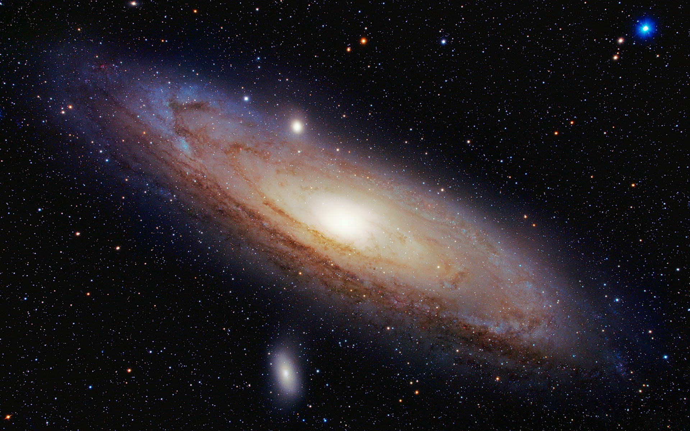
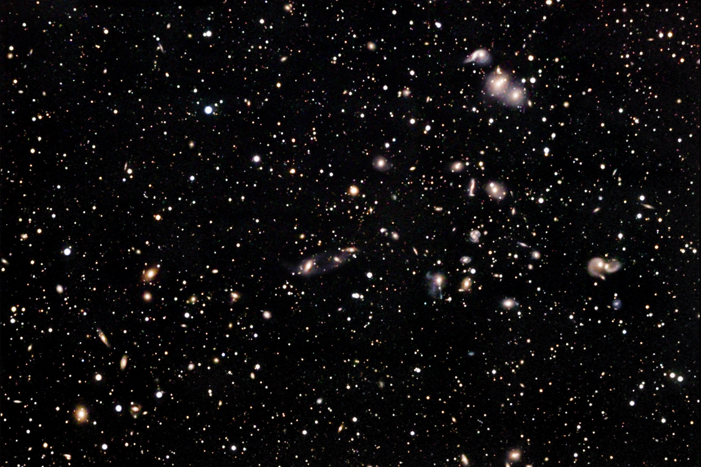

Orion Nebula

- Nebulas are among the most beautiful features of the Universe. The Orion Nebula is nursery for thousands of stars and is about 24 light-years across.
- Also known as M42
- 1,350 light-years from Earth
Andromeda Galaxy
- The Andromeda Galaxy is the closest galaxy to our home galaxy, the Milky Way. It is The only galaxy that we can see with the naked eye.
- Closest Large Spiral Galaxy
- Expected to collide with the Milky Way Galaxy in 4.5 Billion Years
Hercules Galaxy Cluster
- This is the Hercules Galaxy Cluster taken by the Hubble. Each of these lights are galaxies, each filled with millions of stars.
- Approximately 200 galaxies about 500 million light-years away
- Shows many interacting galaxies
Go to Top